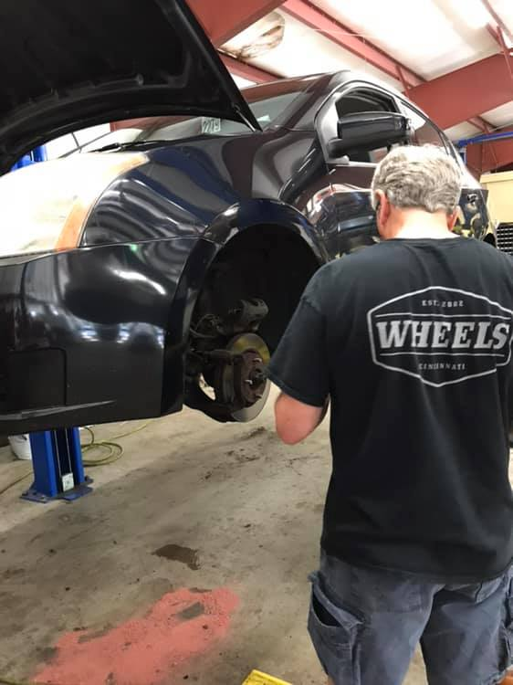

🚗
Donate a Vehicle
A used car, truck, or SUV in decent condition can become a life-changing resource for a neighbor in need.
Learn about vehicle donation →Reliable transportation. Real opportunity.
Wheels Cincinnati brings volunteers, donors, and community partners together to provide clean, reliable vehicles at no cost to qualified people facing transportation barriers.
A 501(c)(3) nonprofit serving the Cincinnati community since 2002.

Our Mission
Wheels Cincinnati solves transportation barriers by providing clean, reliable, donated vehicles to qualified people in need—helping them get to work, care for their families, reach medical appointments, and move forward with greater independence.
Make a Difference
Your vehicle, financial support, time, or skills can become reliable transportation for someone who needs it.
A used car, truck, or SUV in decent condition can become a life-changing resource for a neighbor in need.
Learn about vehicle donation →Financial gifts help cover parts, repairs, inspections, shop expenses, and the costs required to prepare vehicles for recipients.
Make a financial gift →Mechanics, detailers, administrative volunteers, errand runners, organizers, and other helpers all have a place at Wheels.
Ask about volunteering →Need Transportation?
Applicants are referred through partner organizations and are carefully screened. A clear qualifications and application page can help people understand the process before they apply.
Review eligibility, required documentation, partner referrals, and what to expect during the application process.
Qualifications & Application ProcessPrototype note: this button can point to a new dedicated application page once your team approves the content.
One Car at a Time
Wheels exists because donated resources and volunteer talent can be transformed into practical, life-changing transportation.
Questions?
For donations, volunteering, partnerships, or general information, contact the Wheels team.